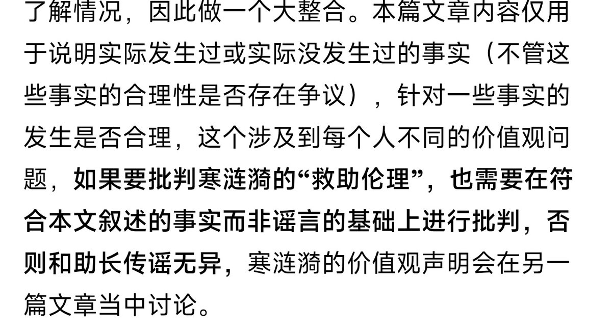

那篇QA的核心目的并不是为了论证“我的所有行为都符合所有意义上的伦理”，只是针对常见的造谣言论（比如说我强奸）这一类进行一个“哪些事情发生过，哪些事情没发生过”的总结，这个也在文章里说了，可以批判我的“伦理问题”，但是要基于事实，关于我对伦理问题的看法（我和你吵架几乎把这些看法说完了）“寒涟漪的价值观声明会在另一篇文章当中叙述”


@HANLIANYI331 是妳在覺得一切對救助倫理的輿論監督都是在苛責，我一直對妳庇護所的事不關心，因為我知道我不可能知曉事件的全貌。我甚至到現在都沒去看過妳所說的造謠的人到底說了啥，也從來沒有指控或抨擊過妳的庇護所或妳個人。最初回這篇帖子只是因為覺得Q&A中有大量的邏輯陷阱，給人一種看似全集，但仔細一想就